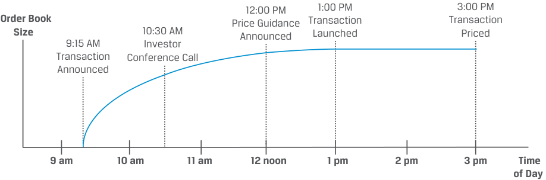

Learning Module 3 Fixed-Income Issuance and Trading - Part 2: Primary and Secondary Fixed-Income Markets
Volume 6: Fixed Income
Learning Module 3 Fixed-Income Issuance and Trading
Part 2/2: Primary and Secondary Fixed-Income Markets (PDF Pages 81–88)
Tập 6: Chứng Khoán Thu Nhập Cố Định (Fixed Income)
Học Phần 3: Phát Hành và Giao Dịch Chứng Khoán Thu Nhập Cố Định (Fixed-Income Issuance and Trading)
Phần 2/2: Thị Trường Thu Nhập Cố Định Sơ Cấp và Thứ Cấp (Trang PDF 81–88)
PRIMARY AND SECONDARY FIXED-INCOME MARKETS 4
THỊ TRƯỜNG THU NHẬP CỐ ĐỊNH SƠ CẤP VÀ THỨ CẤP (PRIMARY AND SECONDARY FIXED-INCOME MARKETS) 4
compare primary and secondary fixed-income markets to equity markets
Mục tiêu: So sánh thị trường thu nhập cố định sơ cấp và thứ cấp với thị trường vốn cổ phần.
Primary Fixed-Income Markets
Thị trường Thu nhập Cố định Sơ cấp (Primary Fixed-Income Markets)
Primary bond markets are markets in which an issuer sells a new bond or bonds to investors to raise capital. In contrast, secondary bond markets are markets in which existing bonds are traded among investors. As in the case of an IPO for equity investors, an issuer approaching the bond market for the first time (often referred to as a debut issuer ) represents the first opportunity for a fixed-income investor to purchase an issuer’s bonds. Bonds can be sold via a public offering, in which any member of the public may buy the bonds, or via a private placement, in which only a selected investor or group of investors may buy the bonds. Similar to primary equity issuance, which typically involves a transfer from private to public ownership, a debut issuer is often replacing private debt, such as a bank loan, with bonds. Examples of debut bond issuers include
Thị trường trái phiếu sơ cấp (primary bond markets) là thị trường trong đó một tổ chức phát hành bán một hoặc nhiều trái phiếu mới cho các nhà đầu tư để huy động vốn. Ngược lại, thị trường trái phiếu thứ cấp (secondary bond markets) là thị trường trong đó các trái phiếu hiện hành được giao dịch giữa các nhà đầu tư. Giống như trường hợp phát hành cổ phiếu lần đầu ra công chúng (IPO) đối với các nhà đầu tư vốn cổ phần, một tổ chức phát hành tiếp cận thị trường trái phiếu lần đầu tiên (thường được gọi là tổ chức phát hành lần đầu – debut issuer) đại diện cho cơ hội đầu tiên để một nhà đầu tư thu nhập cố định mua trái phiếu của tổ chức phát hành đó. Trái phiếu có thể được bán thông qua một đợt chào bán ra công chúng (public offering), trong đó bất kỳ thành viên nào của công chúng cũng có thể mua trái phiếu, hoặc thông qua một đợt phát hành riêng lẻ (private placement), trong đó chỉ một nhà đầu tư hoặc một nhóm nhà đầu tư được lựa chọn mới có thể mua trái phiếu. Tương tự như việc phát hành cổ phiếu trên thị trường sơ cấp vốn thường bao gồm sự chuyển giao từ sở hữu tư nhân sang sở hữu đại chúng, một tổ chức phát hành trái phiếu lần đầu thường thay thế khoản nợ tư nhân (private debt), chẳng hạn như một khoản vay ngân hàng, bằng trái phiếu. Các ví dụ về tổ chức phát hành trái phiếu lần đầu bao gồm:
-
new corporate legal entities formed after a merger, acquisition, or divestiture, which usually refinance all existing debt outstanding;
-
companies that reach a more mature stage of the life cycle with more predictable cash flows and begin issuing debt; and
-
sovereign governments that raise external foreign currency debt for the first time.
-
các thực thể pháp lý doanh nghiệp mới được hình thành sau một vụ sáp nhập, mua lại hoặc thoái vốn (merger, acquisition, or divestiture), thường tái tài trợ cho tất cả các khoản nợ hiện đang lưu hành;
-
các công ty đạt đến giai đoạn trưởng thành hơn trong chu kỳ sống với các dòng tiền dễ dự đoán hơn và bắt đầu phát hành nợ; và
-
các chính phủ quốc gia huy động nợ nước ngoài bằng ngoại tệ lần đầu tiên.
For debut issuers that must complete the respective domestic market or Eurobond registration process, the underwriters usually conduct roadshows and other information sessions for a period of several weeks prior to issuance to familiarize potential investors with the new entity and its uses of and sources for repayment for the new bond.
Đối với các tổ chức phát hành lần đầu phải hoàn tất quy trình đăng ký tại thị trường nội địa tương ứng hoặc thị trường Eurobond, các tổ chức bảo lãnh phát hành (underwriters) thường tiến hành các buổi giới thiệu (roadshows) và các phiên cung cấp thông tin khác trong khoảng thời gian vài tuần trước khi phát hành để giúp các nhà đầu tư tiềm năng làm quen với thực thể mới cũng như mục đích sử dụng vốn và các nguồn trả nợ cho trái phiếu mới.
For repeat issuers of fixed-income securities, the process is far more abbreviated than for debut issuers and for follow-on offerings of equities. Whereas publicly traded companies that return to the equity market to increase their shares outstanding do so under an identical instrument, fixed-income issuers usually issue a new security priced at or close to par. A less common strategy is to increase the size of an existing bond with a price significantly different from par, which is referred to as the reopening of an existing bond.
Đối với các tổ chức phát hành lặp lại / thường xuyên (repeat issuers) chứng khoán thu nhập cố định, quy trình này được rút gọn hơn rất nhiều so với các tổ chức phát hành lần đầu và so với các đợt chào bán cổ phiếu bổ sung (follow-on offerings of equities). Trong khi các công ty đại chúng quay trở lại thị trường vốn cổ phần để tăng số lượng cổ phiếu đang lưu hành đều thực hiện điều đó dưới cùng một công cụ giống hệt nhau, thì các tổ chức phát hành thu nhập cố định thường phát hành một chứng khoán mới được định giá bằng hoặc gần bằng mệnh giá (at or close to par). Một chiến lược ít phổ biến hơn là tăng quy mô của một trái phiếu hiện hành có mức giá khác biệt đáng kể so với mệnh giá, được gọi là phát hành bổ sung / mở lại (reopening) một trái phiếu hiện hành.
For example, unsecured investment-grade issuance of new corporate bonds usually takes place within a several-hour period, as shown in the diagram and timeline in Exhibit 6.
Ví dụ, việc phát hành trái phiếu doanh nghiệp mới thuộc hạng đầu tư không có đảm bảo thường diễn ra trong vòng vài giờ đồng hồ, như được hiển thị trong sơ đồ và lộ trình thời gian tại Bảng minh họa 6 (Exhibit 6).
Exhibit 6: Investment-Grade Corporate Bond Issuance Timeline
Bảng minh họa 6: Lộ trình Thời gian Phát hành Trái phiếu Doanh nghiệp Hạng Đầu tư (Investment-Grade Corporate Bond Issuance Timeline)

Chú thích hình ảnh: Biểu đồ Quy mô sổ lệnh (Order Book Size) tăng dần theo Thời gian trong ngày (Time of Day) từ 9:00 sáng đến 3:00 chiều: - 9:15 sáng: Công bố giao dịch (Transaction Announced) - 10:30 sáng: Cuộc gọi hội nghị với nhà đầu tư (Investor Conference Call) - 12:00 trưa: Công bố định hướng giá (Price Guidance Announced) - 1:00 chiều: Chính thức triển khai giao dịch (Transaction Launched) - 3:00 chiều: Định giá giao dịch (Transaction Priced)
Illustrative Timeline:
Lộ trình thời gian minh họa (Illustrative Timeline):
-
9:00 a.m. Underwriters and issuer agree to launch transaction 9:15 a.m. Transaction announced (size, spread, and maturities TBD) Electronic roadshow released Order book opens to investors
-
10:30 a.m. Investor conference call with issuer and underwriters 12:00 p.m. Price guidance, size, and maturities subject to change Order book closed to investors
-
1:00 p.m. Transaction launched with final size, pricing, and maturities 1:00–3:00 p.m. Underwriters allocate transaction to investors 3:00 p.m. Transaction priced (government benchmark and coupon set) 4:00 p.m. Final term sheet delivered, bonds free to trade same or next day
- 9:00 sáng: Các tổ chức bảo lãnh phát hành và tổ chức phát hành đồng ý triển khai giao dịch.
- 9:15 sáng: Giao dịch được công bố (quy mô, mức chênh lệch spread và kỳ hạn sẽ được xác định sau – TBD). Bản giới thiệu điện tử (electronic roadshow) được phát hành. Sổ lệnh (order book) mở cho các nhà đầu tư.
- 10:30 sáng: Cuộc gọi hội nghị với nhà đầu tư (investor conference call) cùng tổ chức phát hành và các tổ chức bảo lãnh phát hành.
- 12:00 trưa: Định hướng giá (price guidance), quy mô và kỳ hạn có thể thay đổi. Sổ lệnh đóng lại đối với các nhà đầu tư.
- 1:00 chiều: Giao dịch được triển khai với quy mô, mức định giá và kỳ hạn cuối cùng.
- 1:00–3:00 chiều: Các tổ chức bảo lãnh phát hành phân bổ giao dịch cho các nhà đầu tư.
- 3:00 chiều: Giao dịch được định giá (xác lập chuẩn tham chiếu chính phủ và lãi suất coupon).
- 4:00 chiều: Bản điều khoản cuối cùng (final term sheet) được chuyển giao, trái phiếu tự do giao dịch trong cùng ngày hoặc ngày hôm sau.
Exhibit 6 is an example of an underwritten bond offering in which one or more financial intermediaries (or underwriters) guarantee the sale of the bond issue at an offering price that is negotiated with the issuer. Investors in such bonds (e.g., Baywhite) are usually very familiar with the bond indenture and financial statements of these frequent issuers. As in the case of BRWA earlier in this module, issuers of such bonds have ready access to the bond market and often choose issuance timing on an opportunistic basis when market conditions are most favorable. Underwriters seek to manage the bond order book to ensure the greatest availability to large institutional investors at the lowest possible spread across maturities. Frequent bond issuers use a shelf registration or a broad, all-encompassing offering circular that is updated regularly and may be used for a range of future bond issuances.
Bảng minh họa 6 là một ví dụ về một đợt chào bán trái phiếu có bảo lãnh phát hành (underwritten bond offering), trong đó một hoặc nhiều định chế tài chính trung gian (hay tổ chức bảo lãnh phát hành – underwriters) đảm bảo việc bán đợt phát hành trái phiếu ở một mức giá chào bán đã được đàm phán với tổ chức phát hành. Các nhà đầu tư vào những trái phiếu như vậy (ví dụ: Baywhite) thường rất quen thuộc với khế ước trái phiếu và báo cáo tài chính của những tổ chức phát hành thường xuyên này. Giống như trường hợp của BRWA ở phần trước của học phần này, các tổ chức phát hành những trái phiếu như vậy có khả năng tiếp cận sẵn sàng với thị trường trái phiếu và thường chọn thời điểm phát hành trên cơ sở chớp thời cơ khi điều kiện thị trường thuận lợi nhất. Các tổ chức bảo lãnh phát hành tìm cách quản lý sổ lệnh trái phiếu để đảm bảo mức độ phân phối lớn nhất cho các nhà đầu tư tổ chức quy mô lớn ở mức chênh lệch (spread) thấp nhất có thể qua các kỳ hạn. Các tổ chức phát hành trái phiếu thường xuyên sử dụng hình thức đăng ký phát hành khung (shelf registration) hay một bản thông tư chào bán bao quát rộng khắp được cập nhật định kỳ và có thể được sử dụng cho một loạt các đợt phát hành trái phiếu trong tương lai.
Secured bond issuance among corporate high-yield, some special purpose entities, and other issuers (e.g., VIVU) is usually a longer and more involved process than for unsecured investment-grade bonds. Investors must familiarize themselves with unique and more complex covenants, as well as the use of both operating cash flows and collateral as sources of bond repayment. For bonds of lower credit quality, the financial intermediary does not guarantee the sale and may serve only as a broker in a best-efforts offering. That is, it tries to sell the bond issue on a commission basis at the negotiated price only if it can do so.
Việc phát hành trái phiếu có đảm bảo ở nhóm doanh nghiệp lợi suất cao, một số thực thể có mục đích đặc biệt (SPE) và các tổ chức phát hành khác (ví dụ: VIVU) thường là một quy trình dài hơn và phức tạp hơn so với trái phiếu hạng đầu tư không có đảm bảo. Các nhà đầu tư phải tự làm quen với các điều khoản cam kết đặc thù và phức tạp hơn, cũng như việc sử dụng cả dòng tiền hoạt động lẫn tài sản thế chấp làm nguồn trả nợ trái phiếu. Đối với các trái phiếu có chất lượng tín dụng thấp hơn, định chế tài chính trung gian không đảm bảo việc bán được toàn bộ mà có thể chỉ đóng vai trò là nhà môi giới (broker) trong một đợt chào bán cố gắng tối đa (best-efforts offering). Nghĩa là, họ chỉ cố gắng bán đợt phát hành trái phiếu trên cơ sở hưởng hoa hồng ở mức giá đã đàm phán nếu họ có thể làm được điều đó.
In instances where the bond size is small, the issuer is less well known, or the terms are more customized, a bond might take the form of a private placement or non-underwritten, unregistered offering of bonds sold only to a small group of investors.
Trong những trường hợp quy mô trái phiếu nhỏ, tổ chức phát hành ít được biết đến hơn, hoặc các điều khoản được tùy chỉnh riêng biệt nhiều hơn, một trái phiếu có thể mang hình thức phát hành riêng lẻ (private placement) hoặc chào bán không có bảo lãnh phát hành, không đăng ký (non-underwritten, unregistered offering) gồm các trái phiếu chỉ được bán cho một nhóm nhỏ các nhà đầu tư.
Primary market issuance of sovereign debt usually takes the form of a public auction led by the national treasury or finance ministry, which are discussed in detail in a later module.
Việc phát hành nợ chính phủ trên thị trường sơ cấp thường mang hình thức một cuộc đấu giá công khai (public auction) do kho bạc quốc gia hoặc bộ tài chính chủ trì, nội dung này sẽ được thảo luận chi tiết trong một học phần sau.
Secondary Fixed-Income Markets
Thị trường Thu nhập Cố định Thứ cấp (Secondary Fixed-Income Markets)
While progress continues to be made by various electronic marketplace platforms, such as MarketAxess and Tradeweb, fixed-income markets are mostly quote-driven or over-the-counter (OTC) markets. Major participants in secondary bond market trading include institutional investors (such as the Baywhite funds introduced earlier), financial intermediaries, and central banks.
Mặc dù những bước tiến vẫn tiếp tục được thực hiện bởi nhiều nền tảng thị trường giao dịch điện tử khác nhau, chẳng hạn như MarketAxess và Tradeweb, thị trường thu nhập cố định phần lớn vẫn là thị trường định hướng theo báo giá (quote-driven) hay thị trường phi tập trung (over-the-counter – OTC). Các thành viên tham gia chính trong giao dịch thị trường trái phiếu thứ cấp bao gồm các nhà đầu tư tổ chức (chẳng hạn như các quỹ Baywhite đã được giới thiệu trước đó), các định chế tài chính trung gian, và các ngân hàng trung ương.
Secondary bond market liquidity varies widely across fixed-income market segments and even among bonds outstanding from a single issuer. The bid–offer spread or difference in price at which a dealer will buy (or bid) from a customer and sell (or offer) to a customer is a key liquidity measure. This spread is often quoted in basis points in fixed-income markets.
Tính thanh khoản của thị trường trái phiếu thứ cấp rất khác nhau giữa các phân khúc thị trường thu nhập cố định và thậm chí giữa các trái phiếu đang lưu hành của cùng một tổ chức phát hành đơn lẻ. Chênh lệch giá chào mua – chào bán (bid–offer spread), hay phần chênh lệch giá mà tại đó một nhà tạo lập thị trường (dealer) sẽ mua (hay bid) từ khách hàng và bán (hay offer) cho khách hàng, là một thước đo thanh khoản then chốt. Mức chênh lệch này thường được yết bằng điểm cơ bản (basis points) trên thị trường thu nhập cố định.
The most recently issued, or on-the-run, developed market sovereign bonds are typically the most liquid fixed-income securities, with primary dealers making active markets in large size with bid–offer spreads equal to a fraction of a basis point. In some markets, such as Australia, domestic sovereign government bonds are traded on an exchange. Among corporate issuers, recently issued corporate bonds from frequent issuers of higher credit quality usually exhibit the greatest liquidity and tightest bid–offer spreads. Underwriters and other dealers are more likely to hold trading inventory in recent issues and may therefore quote bid-offer spreads of a few basis points. Bonds of less frequent corporate issuers or more seasoned bonds of frequent issuers are rarely traded, leading dealers to quote bid–offer spreads of at least 10–20 basis points or more for small sizes. One exception that can increase trading frequency of a seasoned issue is a significant deterioration in a bond’s credit quality, as in the following example.
Các trái phiếu chính phủ tại thị trường phát triển vừa mới được phát hành gần nhất, hay còn gọi là trái phiếu đang trong đợt phát hành mới (on-the-run), thường là các chứng khoán thu nhập cố định có tính thanh khoản cao nhất, với các nhà tạo lập thị trường sơ cấp (primary dealers) tích cực tạo lập thị trường ở quy mô lớn với mức chênh lệch giá chào mua – chào bán chỉ bằng một phần nhỏ của một điểm cơ bản. Tại một số thị trường, chẳng hạn như Úc, trái phiếu chính phủ nội địa được giao dịch trên một sở giao dịch tập trung (exchange). Trong số các tổ chức phát hành doanh nghiệp, các trái phiếu doanh nghiệp mới được phát hành gần đây từ các tổ chức phát hành thường xuyên có chất lượng tín dụng cao hơn thường thể hiện tính thanh khoản lớn nhất và chênh lệch giá chào mua – chào bán hẹp nhất. Các tổ chức bảo lãnh phát hành và các nhà tạo lập thị trường khác có nhiều khả năng nắm giữ hàng tồn kho giao dịch (trading inventory) đối với các đợt phát hành gần đây và do đó có thể yết mức chênh lệch giá chào mua – chào bán chỉ vài điểm cơ bản. Trái phiếu của các tổ chức phát hành doanh nghiệp ít phát hành hơn hoặc các trái phiếu đã phát hành lâu năm hơn (more seasoned bonds) của các tổ chức phát hành thường xuyên hiếm khi được giao dịch, dẫn đến việc các nhà tạo lập thị trường yết mức chênh lệch giá chào mua – chào bán ít nhất từ 10–20 điểm cơ bản trở lên cho các quy mô giao dịch nhỏ. Một ngoại lệ có thể làm tăng tần suất giao dịch của một đợt phát hành lâu năm là sự suy giảm nghiêm trọng về chất lượng tín dụng của trái phiếu, như trong ví dụ sau đây.
EXAMPLE 4
VÍ DỤ 4
Hertz Corporation
Tập đoàn Hertz (Hertz Corporation)
Hertz Global Holdings Inc. (Hertz) is a US-based car rental company that filed for Chapter 11 bankruptcy protection in May 2020 amid the initial outbreak of COVID-19 in the United States. Hertz’s bonds maturing in 2022 and 2028 were trading at an average of less than 10% of par value, a decline of more than 90% from three months earlier. However, a year later, the bonds rose back to their pre-pandemic price as the company exited bankruptcy through a reorganization with outside investors that kept these bonds intact.
Hertz Global Holdings Inc. (Hertz) là một công ty cho thuê xe hơi có trụ sở tại Hoa Kỳ đã đệ đơn xin bảo hộ phá sản theo Chương 11 (Chapter 11 bankruptcy protection) vào tháng 5 năm 2020 giữa đợt bùng phát dịch COVID-19 ban đầu tại Hoa Kỳ. Các trái phiếu đáo hạn vào năm 2022 và 2028 của Hertz được giao dịch ở mức trung bình chưa đến 10% mệnh giá, giảm hơn 90% so với ba tháng trước đó. Tuy nhiên, một năm sau, các trái phiếu này đã tăng trở lại mức giá trước đại dịch khi công ty thoát khỏi tình trạng phá sản thông qua một đợt tái cơ cấu với các nhà đầu tư bên ngoài mà vẫn giữ nguyên vẹn các trái phiếu này.
Source: Bloomberg News
Nguồn: Bloomberg News
Bonds of issuers believed to be very close to or in bankruptcy, as in the previous example, are referred to as distressed debt . Distressed debt typically trades in the secondary market at a price well below par, because bondholders are unlikely to receive all promised future interest and principal payments. Investors with policies limiting their bond investments to highly rated securities may be forced to sell distressed debt, while hedge funds and other opportunistic investors seeking more equity-like returns (from price appreciation) are often the buyers of distressed bonds. Distressed debt is traded until either the corporate issuer has liquidated its assets or its outstanding bonds have been restructured. In contrast, an equity security may be removed or delisted from secondary trading on an exchange if it fails to meet the listing requirements of the exchange, which often include minimum share prices, net worth, and free float. By the time an issuer’s debt has become distressed, its equity securities will likely have already been delisted.
Trái phiếu của các tổ chức phát hành được cho là đang ở rất gần hoặc đang trong tình trạng phá sản, như trong ví dụ trước, được gọi là nợ xấu / nợ gặp khó khăn tài chính (distressed debt). Nợ gặp khó khăn tài chính thường được giao dịch trên thị trường thứ cấp ở mức giá thấp hơn nhiều so với mệnh giá, bởi vì các trái chủ khó có khả năng nhận được toàn bộ các khoản thanh toán lãi và vốn gốc đã cam kết trong tương lai. Các nhà đầu tư có chính sách giới hạn khoản đầu tư trái phiếu của mình ở các chứng khoán có xếp hạng cao có thể buộc phải bán các khoản nợ gặp khó khăn tài chính, trong khi các quỹ phòng hộ (hedge funds) và các nhà đầu tư săn tìm cơ hội (opportunistic investors) khác đang tìm kiếm tỷ suất sinh lợi giống như cổ phiếu hơn (từ sự tăng giá) thường là người mua các trái phiếu đang gặp khó khăn này. Nợ gặp khó khăn tài chính được giao dịch cho đến khi tổ chức phát hành doanh nghiệp đã thanh lý xong tài sản của mình hoặc các trái phiếu đang lưu hành của họ đã được tái cơ cấu (restructured). Ngược lại, một chứng khoán vốn cổ phần có thể bị hủy bỏ hoặc hủy niêm yết (delisted) khỏi giao dịch thứ cấp trên một sở giao dịch nếu nó không đáp ứng được các yêu cầu niêm yết của sở giao dịch, vốn thường bao gồm mức giá cổ phiếu tối thiểu, giá trị tài sản ròng (net worth) và tỷ lệ cổ phiếu tự do chuyển nhượng (free float). Vào thời điểm khoản nợ của một tổ chức phát hành trở thành nợ gặp khó khăn tài chính, chứng khoán vốn cổ phần của công ty đó nhiều khả năng đã bị hủy niêm yết từ trước rồi.
Finally, many bond issues do not trade at all on a regular basis. Price quotes from dealers or on platforms such as Bloomberg for illiquid bonds often rely on estimates derived from more liquid bonds of similar credit quality and maturity, a process covered in a later module.
Cuối cùng, nhiều đợt phát hành trái phiếu hoàn toàn không được giao dịch một cách thường xuyên. Các báo giá từ các nhà tạo lập thị trường hoặc trên các nền tảng như Bloomberg đối với các trái phiếu kém thanh khoản thường dựa vào các ước tính được suy ra từ các trái phiếu có tính thanh khoản cao hơn có cùng chất lượng tín dụng và kỳ hạn, một quy trình sẽ được trình bày trong một học phần sau.
QUESTION SET
BỘ CÂU HỎI (QUESTION SET)
- A bond issuance by a company after it has reached a more mature stage of the life cycle with more predictable cash flows would be best considered a:
-
A. private placement.
-
B. primary fixed-income market transaction.
-
C. secondary fixed-income market transaction.
-
Solution:
- Một đợt phát hành trái phiếu bởi một công ty sau khi công ty đó đã đạt đến giai đoạn trưởng thành hơn trong chu kỳ sống với các dòng tiền dễ dự đoán hơn sẽ được coi đúng nhất là một:
-
A. đợt phát hành riêng lẻ (private placement).
-
B. giao dịch thị trường thu nhập cố định sơ cấp (primary fixed-income market transaction).
-
C. giao dịch thị trường thu nhập cố định thứ cấp (secondary fixed-income market transaction).
-
Lời giải:
B is correct. Primary bond markets are markets in which an issuer sells a new bond or bonds to investors to raise capital. Secondary bond markets are markets in which existing bonds are traded among investors. Bonds can be sold via a private placement, in which only a selected investor or group of investors may buy the bonds.
B là đáp án đúng. Thị trường trái phiếu sơ cấp là thị trường trong đó một tổ chức phát hành bán một hoặc nhiều trái phiếu mới cho các nhà đầu tư để huy động vốn. Thị trường trái phiếu thứ cấp là thị trường trong đó các trái phiếu hiện hành được giao dịch giữa các nhà đầu tư. Trái phiếu có thể được bán thông qua phát hành riêng lẻ, trong đó chỉ một nhà đầu tư hoặc một nhóm nhà đầu tư được lựa chọn mới có thể mua trái phiếu.
- Which of the following statements about debut issuers is correct ?
-
A. A debut issuer typically replaces bank loans with bonds.
-
B. Debut issuers transfer ownership from public to private markets.
-
C. Debut issuers offer bonds in a public offering, not a private placement.
-
Solution:
- Phát biểu nào sau đây về các tổ chức phát hành lần đầu (debut issuers) là đúng?
-
A. Một tổ chức phát hành lần đầu thường thay thế các khoản vay ngân hàng bằng trái phiếu.
-
B. Các tổ chức phát hành lần đầu chuyển giao quyền sở hữu từ thị trường đại chúng sang thị trường tư nhân.
-
C. Các tổ chức phát hành lần đầu chào bán trái phiếu trong một đợt chào bán ra công chúng, chứ không phải phát hành riêng lẻ.
-
Lời giải:
A is correct. Similar to primary equity issuance, which typically involves a transfer from private to public ownership, a first-time bond issuer is often replacing private debt, such as a bank loan, with bonds.
A là đáp án đúng. Tương tự như việc phát hành cổ phiếu trên thị trường sơ cấp vốn thường bao gồm sự chuyển giao từ sở hữu tư nhân sang sở hữu đại chúng, một tổ chức phát hành trái phiếu lần đầu tiên thường thay thế khoản nợ tư nhân, chẳng hạn như khoản vay ngân hàng, bằng trái phiếu.
B is incorrect. Fixed-income securities have no voting or control rights, and debut issues represent a private to public (not public to private) transition. C is incorrect. A debut issuer can offer bonds in either a public offering or a private placement.
B không đúng. Chứng khoán thu nhập cố định không có quyền biểu quyết hay quyền kiểm soát, và các đợt phát hành lần đầu thể hiện sự chuyển dịch từ tư nhân sang đại chúng (chứ không phải từ đại chúng sang tư nhân). C không đúng. Một tổ chức phát hành lần đầu có thể chào bán trái phiếu trong một đợt chào bán ra công chúng hoặc một đợt phát hành riêng lẻ.
- Relative to unsecured issuers, secured issuers most likely experience an issuance timeline that is:
-
A. shorter.
-
B. the same.
-
C. longer.
-
Solution:
- So với các tổ chức phát hành không có đảm bảo (unsecured issuers), các tổ chức phát hành có đảm bảo (secured issuers) nhiều khả năng nhất trải qua một lộ trình thời gian phát hành:
-
A. ngắn hơn.
-
B. bằng nhau.
-
C. dài hơn.
-
Lời giải:
C is correct. Secured bond issuance among corporate high-yield, some special purpose entities, and other issuers (e.g., VIVU) is usually a longer and more involved process than for unsecured investment-grade bonds. Investors must familiarize themselves with unique and more complex covenants, as well as the use of both operating cash flows and collateral as sources of bond repayment.
C là đáp án đúng. Việc phát hành trái phiếu có đảm bảo ở nhóm doanh nghiệp lợi suất cao, một số thực thể có mục đích đặc biệt và các tổ chức phát hành khác (ví dụ: VIVU) thường là một quy trình dài hơn và phức tạp hơn so với trái phiếu hạng đầu tư không có đảm bảo. Các nhà đầu tư phải tự làm quen với các điều khoản cam kết đặc thù và phức tạp hơn, cũng như việc sử dụng cả dòng tiền hoạt động lẫn tài sản thế chấp làm nguồn trả nợ trái phiếu.
- Identify the following statement as true or false. Justify your answer.
- Xác định phát biểu sau đây là đúng hay sai. Giải thích câu trả lời của bạn.
Secondary fixed-income markets consist mostly of quote-driven or overthe-counter markets, while secondary trading for listed equity markets primarily occurs on an electronic exchange. Solution:
Thị trường thu nhập cố định thứ cấp bao gồm chủ yếu là các thị trường định hướng theo báo giá (quote-driven) hoặc thị trường phi tập trung (over-the-counter), trong khi giao dịch thứ cấp đối với các thị trường vốn cổ phần niêm yết chủ yếu diễn ra trên một sở giao dịch điện tử (electronic exchange).
True. Unlike listed equities, for which secondary trading largely occurs on an electronic exchange, fixed-income markets consist mostly of quote-driven or over-the-counter markets.
- For a firm in distress, its bonds will most likely stop trading:
- A. before the firm’s equity.
- Lời giải:
B. at the same time as the firm’s equity.
Đúng (True). Không giống như cổ phiếu niêm yết mà giao dịch thứ cấp phần lớn diễn ra trên một sở giao dịch điện tử, các thị trường thu nhập cố định bao gồm chủ yếu là các thị trường định hướng theo báo giá hoặc thị trường phi tập trung (OTC).
C. after the firm’s equity. Solution:
- Đối với một doanh nghiệp đang gặp khó khăn tài chính (in distress), trái phiếu của công ty đó sẽ nhiều khả năng nhất ngừng giao dịch:
-
A. trước cổ phiếu của doanh nghiệp.
-
B. cùng lúc với cổ phiếu của doanh nghiệp.
-
C. sau cổ phiếu của doanh nghiệp.
-
Lời giải:
C is correct. Distressed debt is traded until either the corporate issuer has liquidated its assets or its outstanding bonds have been restructured. In contrast, an equity security may be removed or delisted from secondary trading on an exchange if it fails to meet the listing requirements of the exchange, which often include minimum share prices, net worth, and free float. By the time an issuer’s debt has become distressed, its equity securities will likely have already been delisted.
C là đáp án đúng. Nợ gặp khó khăn tài chính (distressed debt) được giao dịch cho đến khi tổ chức phát hành doanh nghiệp đã thanh lý xong tài sản của mình hoặc các trái phiếu đang lưu hành của họ đã được tái cơ cấu. Ngược lại, một chứng khoán vốn cổ phần có thể bị hủy bỏ hoặc hủy niêm yết khỏi giao dịch thứ cấp trên một sở giao dịch nếu nó không đáp ứng được các yêu cầu niêm yết của sở giao dịch, vốn thường bao gồm mức giá cổ phiếu tối thiểu, giá trị tài sản ròng và tỷ lệ cổ phiếu tự do chuyển nhượng. Vào thời điểm khoản nợ của một tổ chức phát hành trở thành nợ gặp khó khăn tài chính, chứng khoán vốn cổ phần của công ty đó nhiều khả năng đã bị hủy niêm yết từ trước rồi.
~~PRACTICE PROBLEMS~~
BÀI TẬP THỰC HÀNH (PRACTICE PROBLEMS)
1. Match the instrument type on the left with its typical investor on the right.
1. Hãy ghép loại công cụ ở bên trái với nhà đầu tư điển hình của nó ở bên phải.
| A. Commercialpaper | I. Insurance companies |
|---|---|
| B. Unsecured corporate bonds | II. Hedge funds |
| C. Secured corporate bonds | III. Money market funds |
| Loại công cụ | Nhà đầu tư điển hình |
|---|---|
| A. Thương phiếu (Commercial paper) | I. Các công ty bảo hiểm (Insurance companies) |
| B. Trái phiếu doanh nghiệp không có đảm bảo (Unsecured corporate bonds) | II. Các quỹ phòng hộ (Hedge funds) |
| C. Trái phiếu doanh nghiệp có đảm bảo (Secured corporate bonds) | III. Các quỹ thị trường tiền tệ (Money market funds) |
2. An issuer with a AAA credit rating would most likely be a:
2. Một tổ chức phát hành có xếp hạng tín dụng AAA sẽ nhiều khả năng nhất là một:
-
A. distressed issuer.
-
B. high-yield issuer.
-
C. sovereign issuer.
-
A. tổ chức phát hành đang gặp khó khăn tài chính (distressed issuer).
-
B. tổ chức phát hành lợi suất cao (high-yield issuer).
-
C. tổ chức phát hành chính phủ quốc gia (sovereign issuer).
3. An index tracking the Bloomberg Barclays Global Aggregate Index would most likely have:
3. Một quỹ chỉ số bám sát Chỉ số Tổng hợp Toàn cầu Bloomberg Barclays (Bloomberg Barclays Global Aggregate Index) sẽ nhiều khả năng nhất có:
-
A. limited security selection.
-
B. modest turnover due to changes in market values.
-
C. comprehensive exposure to fixed-income markets.
-
A. sự lựa chọn chứng khoán hạn chế (limited security selection).
-
B. tỷ lệ thay đổi danh mục vừa phải do những thay đổi về giá trị thị trường.
-
C. khả năng tiếp cận toàn diện tới các thị trường thu nhập cố định (comprehensive exposure to fixed-income markets).
4. A firm that increases the size of an existing bond issue with a price significantly different from par is conducting a:
4. Một doanh nghiệp tăng quy mô của một đợt phát hành trái phiếu hiện hành có mức giá khác biệt đáng kể so với mệnh giá là đang tiến hành một đợt:
-
A. reopening.
-
B. private placement.
-
C. distressed debt issuance.
-
A. phát hành bổ sung / mở lại (reopening).
-
B. phát hành riêng lẻ (private placement).
-
C. phát hành nợ gặp khó khăn tài chính (distressed debt issuance).
5. The bond issue trading at the highest bid–offer spread is most likely a:
5. Đợt phát hành trái phiếu giao dịch ở mức chênh lệch giá chào mua – chào bán (bid–offer spread) cao nhất nhiều khả năng nhất là một:
-
A. recently issued sovereign bond.
-
B. seasoned investment-grade corporate bond.
-
C. recently issued investment-grade corporate bond.
-
A. trái phiếu chính phủ mới phát hành gần đây.
-
B. trái phiếu doanh nghiệp hạng đầu tư đã phát hành lâu năm (seasoned investment-grade corporate bond).
-
C. trái phiếu doanh nghiệp hạng đầu tư mới phát hành gần đây.
~~SOLUTIONS~~
LỜI GIẢI (SOLUTIONS)
1.
-
A. III
-
B. I
-
C. II
-
C is correct. Sovereign government issuers typically have the lowest credit risk (highest credit rating) in each market, due to sovereign governments’ right to tax economic activity. High-yield issuers have below-investment-grade credit ratings (BBB- or below), while distressed issuers typically have high-yield ratings or are in default.
-
C is correct. Mutual funds and ETFs that track this benchmark index offer comprehensive exposure to many fixed-income markets with no active security selection and portfolio turnover limited solely to either new issuance or issues no longer meeting inclusion criteria.
-
A is correct. Increasing the size of an existing bond with a price significantly different from par is referred to as the reopening of an existing bond. A private placement refers to bonds being sold to a selected investor or group of investors, versus a sale to the public. Bonds of issuers believed to be very close to or in bankruptcy are referred to as distressed.
-
B is correct. Bonds of less frequent corporate issuers or more seasoned bonds of frequent issuers are rarely traded, leading dealers to quote bid–offer spreads of at least 10–20 basis points or more for small sizes. The most recently issued, or on-the-run, developed market sovereign bonds are typically the most liquid fixed-income securities, with primary dealers making active markets in large size with bid–offer spreads equal to a fraction of a basis point. Among corporate issuers, recently issued corporate bonds from frequent issuers of higher credit quality usually exhibit the greatest liquidity and tightest bid–offer spreads.
-
- A. III (Thương phiếu – Các quỹ thị trường tiền tệ)
- B. I (Trái phiếu doanh nghiệp không có đảm bảo – Các công ty bảo hiểm)
- C. II (Trái phiếu doanh nghiệp có đảm bảo – Các quỹ phòng hộ)
-
C là đáp án đúng. Các tổ chức phát hành chính phủ quốc gia (sovereign government issuers) thường có rủi ro tín dụng thấp nhất (xếp hạng tín dụng cao nhất) tại mỗi thị trường, do quyền đánh thuế hoạt động kinh tế của chính phủ có chủ quyền. Các tổ chức phát hành lợi suất cao có xếp hạng tín dụng dưới hạng đầu tư (từ BB+ trở xuống; BBB- là mức thấp nhất của hạng đầu tư), trong khi các tổ chức phát hành đang gặp khó khăn tài chính thường có xếp hạng lợi suất cao hoặc đang trong tình trạng vỡ nợ.
-
C là đáp án đúng. Các quỹ tương hỗ và quỹ ETF bám sát chỉ số chuẩn này mang lại khả năng tiếp cận toàn diện tới nhiều thị trường thu nhập cố định mà không có sự lựa chọn chứng khoán chủ động nào và tỷ lệ thay đổi danh mục chỉ giới hạn ở các đợt phát hành mới hoặc các đợt phát hành không còn đáp ứng tiêu chí đưa vào chỉ số.
-
A là đáp án đúng. Việc tăng quy mô của một trái phiếu hiện hành có mức giá khác biệt đáng kể so với mệnh giá được gọi là phát hành bổ sung / mở lại (reopening) một trái phiếu hiện hành. Phát hành riêng lẻ (private placement) đề cập đến việc trái phiếu được bán cho một nhà đầu tư hoặc một nhóm nhà đầu tư được lựa chọn, so với việc bán ra công chúng. Trái phiếu của các tổ chức phát hành được cho là đang ở rất gần hoặc đang trong tình trạng phá sản được gọi là nợ gặp khó khăn tài chính (distressed).
-
B là đáp án đúng. Trái phiếu của các tổ chức phát hành doanh nghiệp ít phát hành hơn hoặc các trái phiếu đã phát hành lâu năm hơn (more seasoned bonds) của các tổ chức phát hành thường xuyên hiếm khi được giao dịch, dẫn đến việc các nhà tạo lập thị trường yết mức chênh lệch giá chào mua – chào bán ít nhất từ 10–20 điểm cơ bản trở lên cho các quy mô giao dịch nhỏ. Các trái phiếu chính phủ tại thị trường phát triển vừa mới được phát hành gần nhất (on-the-run) thường là các chứng khoán thu nhập cố định có tính thanh khoản cao nhất, với các nhà tạo lập thị trường sơ cấp tích cực tạo lập thị trường ở quy mô lớn với mức chênh lệch giá chào mua – chào bán chỉ bằng một phần nhỏ của một điểm cơ bản. Trong số các tổ chức phát hành doanh nghiệp, các trái phiếu doanh nghiệp mới được phát hành gần đây từ các tổ chức phát hành thường xuyên có chất lượng tín dụng cao hơn thường thể hiện tính thanh khoản lớn nhất và chênh lệch giá chào mua – chào bán hẹp nhất.